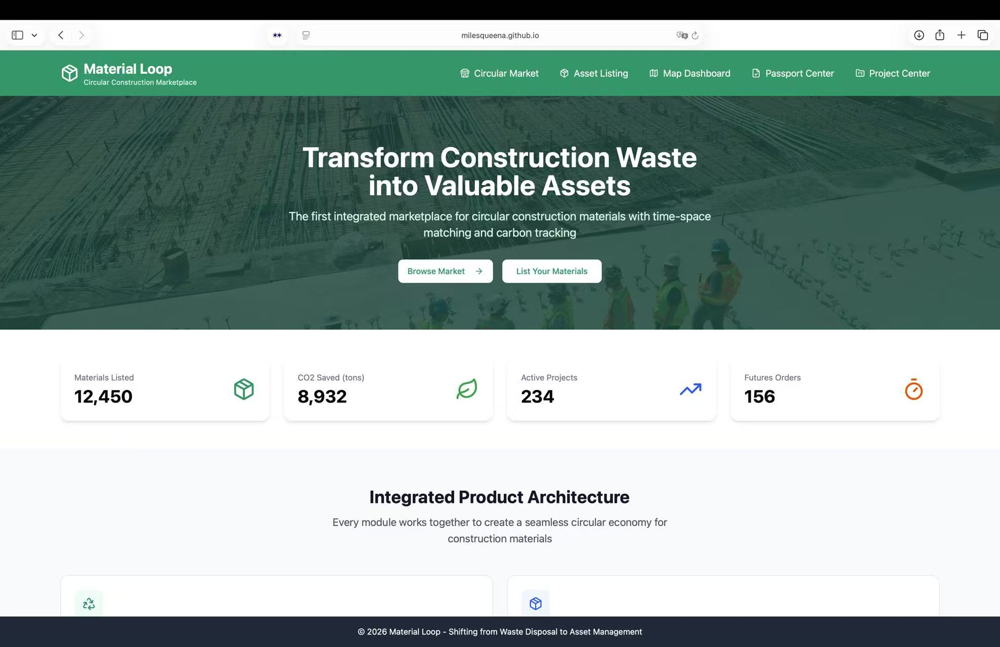

B2B product design · Circular construction
Material Loop
Design reuse around the moment materials become available.
A marketplace concept connecting reclaimed construction materials with project schedules, logistics, and traceability—so procurement can consider both what is available and when.
On first opening, select “Back to Home” if the prototype shows its 404 screen. This loads the working in-app homepage. Displayed inventory, carbon, and project totals are prototype content, not verified operating results.

Experience at a glance
The coordination problem
A reusable material is only useful to a construction project if its availability, quality, location, and timing fit the procurement window. A catalogue organized only around material type leaves those decisions disconnected.
Material Loop brings these dependencies into a single product concept spanning suppliers, buyers, and project planning.
A connected product architecture
- Circular Market: spot inventory, future availability, and dismantling opportunities.
- Asset Listing: a structured entry point for material information.
- Spatial–Temporal Dashboard: a place to consider schedule and logistics together.
- Passport Center: material provenance, quality documents, and carbon-related information.
The design value is the connection between modules: a listing needs enough context to become a procurement decision.
Make constraints legible
The central interaction principle is to bring schedule fit and material confidence forward in the decision process. A buyer needs to understand why a promising item might still be unsuitable, and what information is missing before committing.
AI-assisted posting and schedule alignment are presented as concept capabilities. The available evidence does not establish a production matching algorithm, verified carbon accounting, or automated quality certification.
What is demonstrated
The hosted interface presents marketplace, listing, dashboard, passport, and project modules. The working homepage can be reached through its in-app Back to Home action.
Next validation: ask a buyer to find a material for a specific date, explain any mismatch, and identify the documentation needed to proceed. The goal would be to test decision clarity before adding more features.